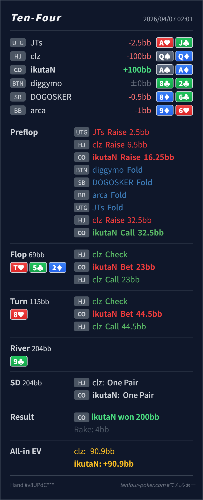

Preflop
良いAA は文句なしの最上位です。16.25BB の 4bet も自然で、32.5BB に対して IP flat することで QQ/KK/AK を残したまま低SPRの postflop に持ち込めます。
主論点は、小さい 5bet に対して AA を IP で flat し、SPR が 1 を切る pot でどう取り切るかです。当時の思考メモはないので、「AA なので preflop で即 jam したくなる」「5bet pot で逆に慎重になって turn で止まりたくなる」という仮定で見ます。結論は、preflop flat、flop 小さめ c-bet、turn jam がかなりきれいに噛み合っていて、再レビューでも大きなズレは見えません。
A♠A♦Q♠Q♦T♥ 5♣ 2♦ / 8♥ / 9♣32.5BB の小さい 5bet に対する IP flat が QQ/KK/AK を残しやすいです。AA で 強すぎるから即 jam に寄りやすいところです。今回の node では jam でも大事故ではありませんが、flat の方が相手の弱め continue を消しにくいです。1/3pot、turn shove はかなりまとまっています。A♠A♦Q♠Q♦2.5BB, HJ raise 6.5BB, CO raise 16.25BB, UTG fold, HJ raise 32.5BB, CO callT♥ 5♣ 2♦ / 8♥ / 9♣23BB, HJ call44.5BB, HJ callturn all-in)AA, Villain one pair QQ
良いAA は文句なしの最上位です。16.25BB の 4bet も自然で、32.5BB に対して IP flat することで QQ/KK/AK を残したまま低SPRの postflop に持ち込めます。
T♥ 5♣ 2♦良い
Hero の AA は range 上位で、value / protection を取りたい hand です。dry board なので小さく打って広く続行させる価値があります。
8♥良い
Hero はまだ明確に前で、相手の残り stack 44.5BB を回収し切る局面です。
9♣良い
review の焦点は turn までの積み上げで十分です。
| 論点 | その場で起きがちな見え方 | どこがズレたか | 次回の基準 |
|---|---|---|---|
preflop の AA | AA なので dead money を回収しつつ即 jam したくなる | HJ の 32.5BB は小さく、IP で flat しても SPR はすでにかなり低いです。QQ/KK/AK を残したまま postflop で取り切りやすく、6bet jam でそれらを降ろすより得しやすいです。 | 最上位 hand ほど jam した時に何が降りるか を先に確認する |
| flop の小さい c-bet | SPR が低いので flop で全部入れたくなる | T♥ 5♣ 2♦ はかなり dry で、AA は range 上位です。23BB の小さめサイズなら QQ/KK や一部 AK を広く残せて、turn で自然に回収できます。 | SPR<1 でも 即 jam だけでなく 何を残せる size か で選ぶ |
| turn の jam | backdoor heart が出ると少し慎重になって check したくなる | 相手の残りは 44.5BB しかなく、QQ/KK から回収する方がずっと大事です。無料カードを渡す理由がなく、ここは素直に jam で十分です。 | 残り stack が薄い上位 overpair は怖い runout より回収優先 |
| ストリート | その時点の見え方 | 判断の軸 | 評価 | コメント |
|---|---|---|---|---|
| Preflop | HJ の 5bet range は QQ+, AK を中心に、一部 AQs が混ざるくらいのかなり強い塊です。UTG の dead money も pot に残っています。 | AA は文句なしの最上位です。16.25BB の 4bet も自然で、32.5BB に対して IP flat することで QQ/KK/AK を残したまま低SPRの postflop に持ち込めます。 | 良い | jam も候補ですが、この size なら flat がかなり強いです。 |
Flop T♥ 5♣ 2♦ | HJ の check range には QQ-KK, AK が厚く残り、set 系はかなり薄いです。 | Hero の AA は range 上位で、value / protection を取りたい hand です。dry board なので小さく打って広く続行させる価値があります。 | 良い | 23BB の c-bet はかなり自然です。jam より QQ/KK を残しやすいです。 |
Turn 8♥ | flop call 後の HJ range は QQ-KK が主軸で、一部 A♥K♥ のような backdoor 継続が混ざる程度です。 | Hero はまだ明確に前で、相手の残り stack 44.5BB を回収し切る局面です。 | 良い | ここは素直に jam で十分です。check back に回す理由はかなり薄いです。 |
River 9♣ | turn call で HJ が all-in になっているので、river に意思決定は残っていません。 | review の焦点は turn までの積み上げで十分です。 | 良い | pot の作り方ができているので、river は結果確認だけで大丈夫です。 |
AA は、IP flat で QQ/KK/AK を残す設計がかなり強いです。即 jam だけが正解ではなく、small c-bet から turn で回収する line がよく噛み合います。32.5BB のような小さい 5bet は QQ/AK を残したままになりやすく、AA の IP flat がかなり刺さります。QQ/KK を flop / turn で降ろせない相手が多いなら、dry flop の small c-bet は jam より取り切りやすいことが多いです。